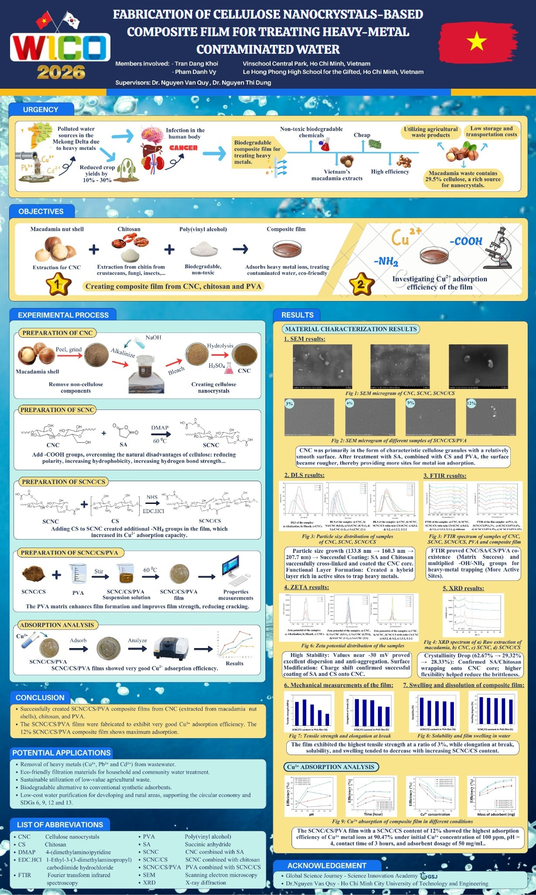
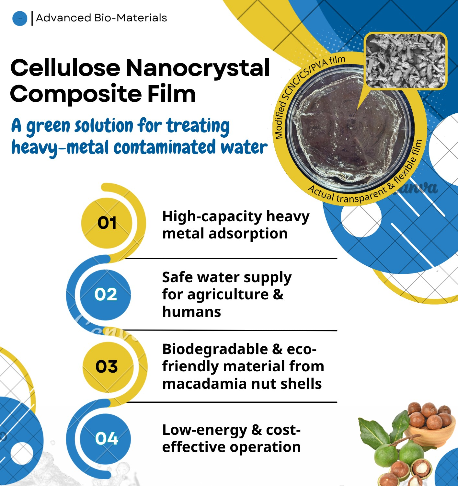
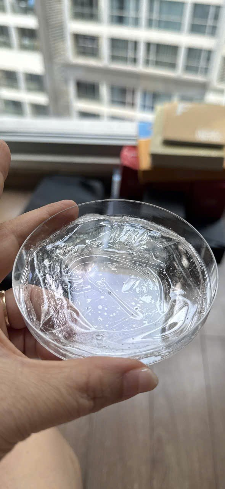
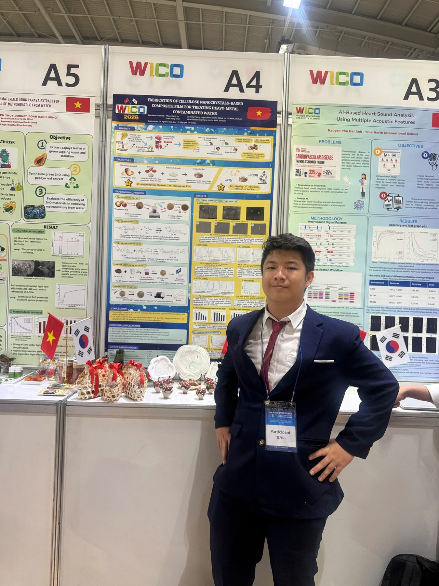
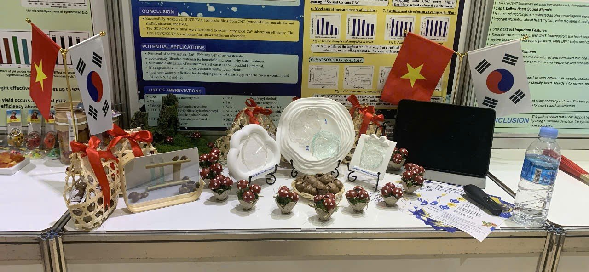
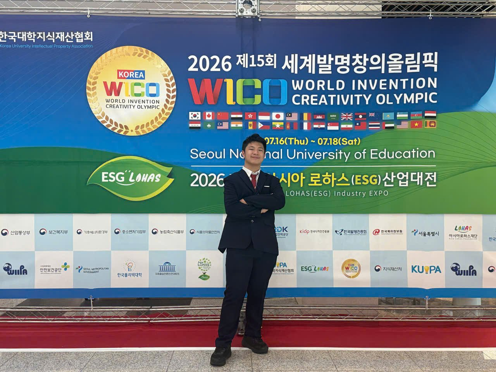
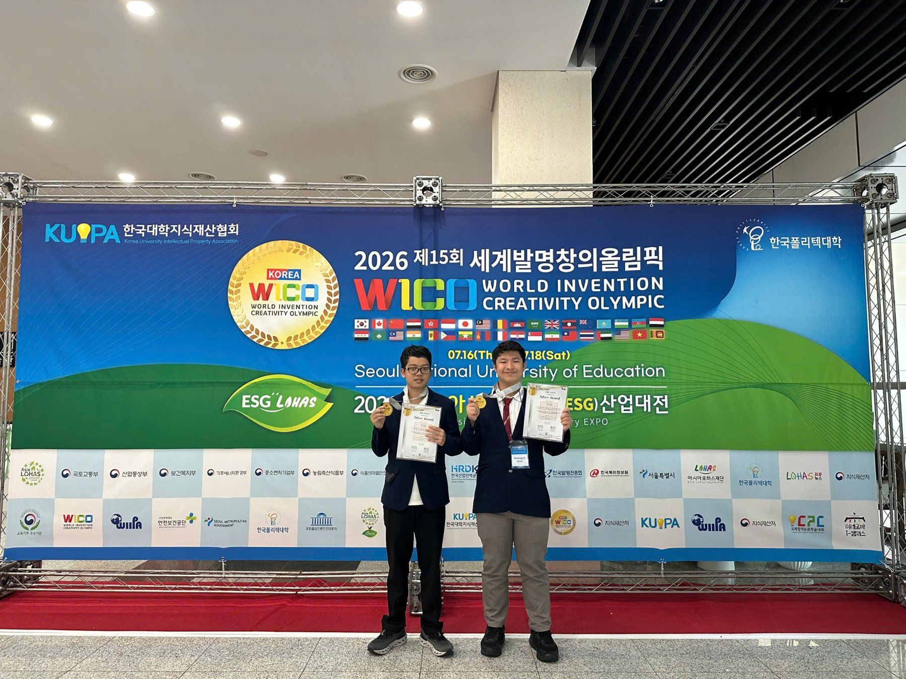
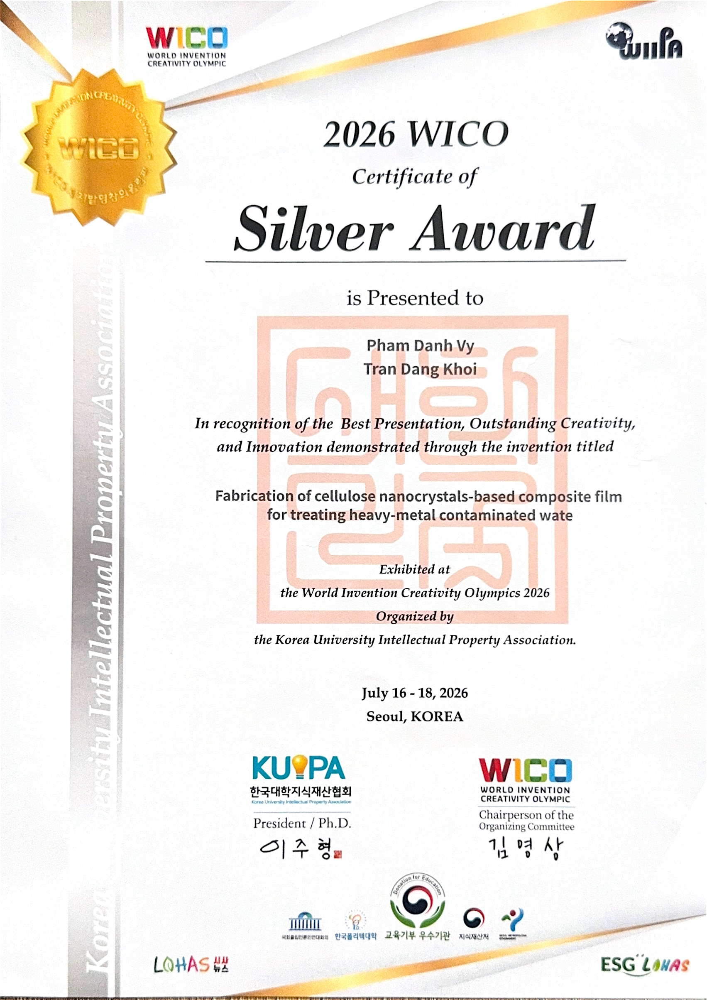

Cellulose Nanocrystals for Water Treatment
A composite film developed for treatment of heavy-metal-contaminated water.
Research project
Fabrication of Cellulose Nanocrystals-Based Composite Film for Treating Heavy-Metal Contaminated Water.
The project explores cellulose-nanocrystal-based composite films as potential materials for treating water contaminated with heavy metals. The team presented its work at the World Invention Creativity Olympics (WICO) 2026 in Seoul, South Korea, and received a Silver Award.
Research poster & project overview
Explore the research methodology, material characterization, and experimental results in the project poster, followed by a concise overview of the proposed water-treatment application.


Material prototype
A close-up of the transparent composite-film sample developed during the project.

International exhibition · Seoul, 2026
Presenting the research poster and material samples at the WICO exhibition.



Silver Award
WICO 2026 recognized the project with a Silver Award. The certificate names both team members, Pham Danh Vy and Tran Dang Khoi.


Project introduction video
Research introduction · WICO 2026 · 1 min 59 sec